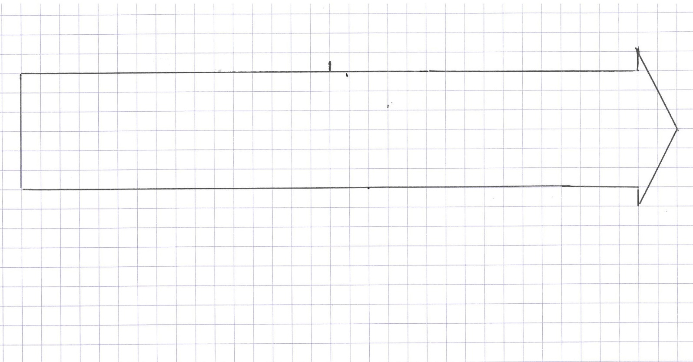

4e Histoire. Chapitre 1 H1 — Leçon | Bourgeoisie, commerce et esclavage au XVIIIe siècle |
Hachette. HG 4e. 2021. Livre p. 11 à 31. Leçon du manuel p. 26.
Rappel de 5e — Au XVIe siècle, les Européens ont conquis l’Amérique et y ont fondé des colonies. Ils y ont fait venir les premiers esclaves africains. Un bourgeois est un habitant d’une ville qui vit du commerce ou d’un métier : il appartient au tiers état. |
Introduction
Au XVIIIe siècle, les ports français de l’océan Atlantique, comme La Rochelle, Nantes et Bordeaux, deviennent très riches. Au même moment, de l’autre côté de l’océan, des centaines de milliers d’esclaves africains travaillent dans les champs de canne à sucre.
Quel lien y a-t-il entre la richesse du port de La Rochelle et le travail des esclaves en Amérique ?
I. Au XVIIIe siècle, les ports de l’Europe atlantique s’enrichissent grâce au grand commerce…
A. Des colonies en Amérique, des comptoirs en Afrique et en Asie
Les principaux pays d’Europe qui possèdent des territoires dans le monde sont le Royaume-Uni, la France, l’Espagne, le Portugal et les Provinces-Unies. En Amérique, ils possèdent des colonies ; pour la France, les plus riches sont des îles des Antilles : Saint-Domingue, la Martinique, la Guadeloupe. En Afrique et en Asie, ils n’ont le plus souvent que des comptoirs sur les côtes. Une colonie a le droit de commercer seulement avec sa métropole. Le roi soutient ce commerce en créant des compagnies de commerce, comme la Compagnie des Indes.
B. Le négoce fait la fortune des ports
Les ports de la façade atlantique vivent du négoce. Les négociants achètent et revendent les marchandises ; les armateurs équipent les navires. Les navires partent avec du vin, de la farine et des tissus. Ils reviennent des colonies avec du sucre, du café, du cacao et du coton. En Europe, ces produits tropicaux sont à la mode : on boit du café et du chocolat, on consomme de plus en plus de sucre. La plupart des échanges avec les colonies se font par un aller-retour direct : c’est le commerce « en droiture ». Bordeaux devient le premier port colonial du royaume.
→ Mais qui cultive ces produits ?
II. … un commerce qui repose sur l’économie de plantation et la traite des esclaves…
A. Les plantations produisent grâce au travail forcé des esclaves
Dans les colonies d’Amérique, les colons possèdent des plantations (aux Antilles, on dit « habitations ») : de grandes exploitations qui cultivent un seul produit à vendre en Europe, surtout la canne à sucre et le café. C’est l’économie de plantation. Tout le travail est fait par des esclaves africains, surveillés et punis avec violence. En 1788, à Saint-Domingue, la plus riche colonie française, près de 9 habitants sur 10 sont des esclaves. Depuis 1685, le Code noir, un texte du roi, fixe les règles de l’esclavage dans les colonies françaises : l’esclave y est un bien qui appartient à son maître, comme un meuble.
B. La traite atlantique déporte des millions d’Africains
Pour avoir toujours plus d’esclaves, les colons en achètent : c’est la traite. Un navire négrier part d’un port européen, par exemple Nantes, avec des tissus, des armes et de l’alcool. Sur les côtes d’Afrique, le capitaine les échange contre des captifs, vendus par des marchands et des rois africains. Enchaînés et entassés, les captifs traversent l’Atlantique ; beaucoup meurent pendant le voyage. En Amérique, ils sont vendus comme esclaves, et le navire revient en Europe chargé de sucre ou de café. Ce circuit en trois étapes est le commerce triangulaire. Il ne représente qu’une partie du commerce, mais il fournit aux plantations les travailleurs dont elles ont besoin. Entre le XVIe et le XIXe siècle, environ 12 millions d’Africains ont été déportés de force vers l’Amérique, dont la moitié au XVIIIe siècle, quand la traite est à son apogée. D’autres traites, plus anciennes, emmenaient aussi des captifs africains vers le monde musulman. L’Europe, l’Afrique et l’Amérique sont désormais reliées par un commerce atlantique.
→ Qui profite de ce commerce ?
III. … et qui profite d’abord à la bourgeoisie marchande.
A. Les négociants s’enrichissent et transforment leurs villes
Les négociants et les armateurs forment une bourgeoisie marchande très riche. Avec leurs bénéfices, ils achètent de nouveaux navires, des terres, parfois des plantations. Ils font construire de beaux hôtels particuliers, et leurs villes s’embellissent de places et de théâtres, comme la place de la Bourse à Bordeaux. Ce commerce enrichit aussi les planteurs et remplit les caisses du roi.
B. Une bourgeoisie riche et influente, sans les privilèges de la noblesse
Ces bourgeois appartiennent au tiers état : ils n’ont pas les privilèges de la noblesse. Pourtant, ils sont influents : ils dirigent les villes et conseillent le roi sur le commerce. Les plus riches achètent une charge qui les rend nobles.
Conclusion
La richesse des ports ne vient pas seulement de la traite : la plupart des échanges avec les colonies se font en droiture. Mais les navires qui reviennent des colonies rapportent presque tous des produits cultivés par des esclaves. La prospérité des ports atlantiques repose donc en grande partie sur l’esclavage. Pour savoir d’où vient la fortune d’un négociant, il faut se demander : que transportent ses navires, et qui a produit ces marchandises ?
Dès le XVIIIe siècle, des philosophes comme Montesquieu (1748) critiquent l’esclavage, et en 1791 les esclaves de Saint-Domingue se révoltent (→ chapitres H2 et H5).
Vocabulaire
Bourgeoisie marchande | |
Commerce atlantique | |
Économie de plantation | |
Esclavage | Système de travail forcé dont les travailleurs sont la propriété d’un maître |
Négoce | Transaction marchande entre un vendeur et un acheteur de marchandises |
Traite | |
Déjà vus en 5e | Colonie : territoire conquis et dirigé par un pays étranger, qui l’exploite. Métropole : ici, le pays qui possède des colonies (en géographie, le mot désignera une très grande ville). |
